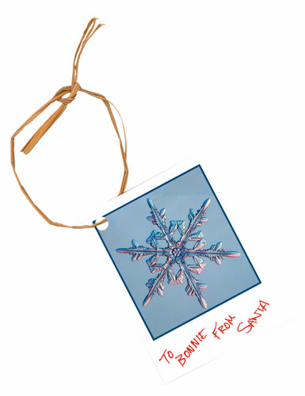
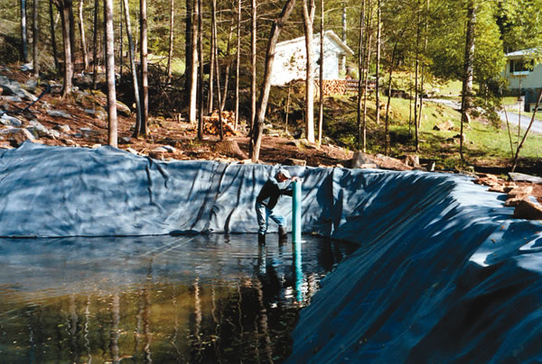

Bring Back the Geo!
In response to “Making Wiser Transportation Choices” (News from Mother) in the October/November 2005 issue: My commute became longer this year, so my husband got on the Internet and found a Geo for me. We had one long ago before our babies arrived. It really does get 50 miles per gallon. Our other car is a Scion that gets 36 mpg (and is a really great car). I save $20 a week by driving the Geo. l am in the middle of nowhere in Texas, so there is no public transportation. Why don’t they make Geos anymore?
Marilyn Hagle
Blooming Grove, Texas
Don’t Forget Pellet Stoves
In your article “Slash Your Heating Bills” (December/January 2006), you did not mention wood pellet heating.
I recently bought a wood pellet stove to be a secondary heating source to my electric furnace. I absolutely love it.
Marvann Welch
Fair Grove, Missouri
Loves Her Electric Chain Saw
I was on my way home from purchasing a Remington electric chain saw, when I stopped to pick up my October/November 2005 issue at the post office. Immediately, I read the article on electric chain saws.
I am a single (not young) woman building my own home, mostly by myself, but with occasional volunteers. I was able to get a whole load of logs from a forest thinning project and will use them for a post-and-beam framework. I borrowed a gas chain saw but couldn’t get it started. All that pulling wore me out. Besides, it was too heavy, loud and polluting. I don’t have electric service, so I bought an inverter that hooks up to my truck battery with a 25-foot extension cord.
I couldn’t be happier with the setup. I would recommend this to anyone who has limited physical strength, is working in a remote location or just objects to the noise and fumes of gas chain saws.
Right now, I’m using the electric chain saw to cut and fit all the posts and beams together. When it’s all just right, I’ll hire a tree service to lift the heaviest logs into place.
Judith Williams
Abiquiu, New Mexico
Act Now for Energy Security
Imagine members of your community trapped in squalor similar to what Hurricane Katrina victims experienced in the New Orleans Superdome. Then imagine that no help ever comes, because the same conditions exist in every community in the United States.
Such a scenario will start with spiraling inflation brought on by rising fuel costs. Low-wage employees who drive the gas-guzzling castoffs of the rich will no longer be able to justify traveling the long distances from where they can afford housing into where they service the wealthy portions of Metropolis. It will be a simple formula … When it costs more to fill your tank than you can make working, you will find another way to survive.
Unemployed gangs will terrorize communities, not because they’re bad people, but because they’re hungry. Fuel shortages will cause violent confrontations in gas lines. The federal strategic oil reserve will have been depleted helping the victims of “natural” disasters brought on by climate change. The cost of running a police state will bankrupt government. The surviving remnants of communities across America may again learn to live off the land, but it will take many generations to repair the damage done by the traumatic events they lived through.
Today we need a federal Apollo-scale project to quickly make the transition from finite energy resources to local renewable energy solutions. Such a plan may seem expensive, but the cost of inaction is unimaginably more expensive. All the other tasks that fill our days will soon be rendered irrelevant unless we stop relying on finite resources and learn to rely on the annual energy income from the sun.
Things you can do:
• Demand that the federal government require the auto industry to produce more efficient (at least 50 miles per gallon) and less polluting (electric) vehicles.
• Buy locally produced products.
• Sign up with the Apollo Alliance (www.apolloalliance.org) and push for national energy independence.
• Improve the energy efficiency of your home. Then, install enough photovoltaics on your roof to supply all your needs, including a plug-in hybrid or electric vehicle.
• Pass this message on with your ideas.
Steve Heckeroth
Albion, California
Insert Cards
As a green Republican who recycles, has solar heating, drives a 35-mpg car, uses no pesticides, etc., I love your magazine and the way you don’t politicize your agenda; all humans want to live on a clean Earth. But in the December/January 2006 issue I saw another way for you to lead the way in the environmental movement - by removing the cards and mailers from the magazine. Surely your marketing and advertising people can come up with better ways to promote your magazine and those who advertise in it.
Mike Pendergast
Phelps, New York
For Mother Earth News to flourish, we have to promote the magazine continually. For both environmental and business reasons, we work to make our promotions as efficient as possible. We measure our use of paper and other resources very carefully, always looking for better ways.
We realize that many readers view the cards as wasteful, but that’s because they aren’t aware of the inefficiency of the direct-mail alternative. Readers respond at a much higher rate to insert cards. Our research has confirmed repeatedly that inserts are the greenest way to maintain our circulation-and they also provide a greener alternative for our advertisers.
For example, in order to produce as many subscriptions as we get from one insert card in the magazine, we would have to send out four multiple-page direct-mail solicitations, each in an envelope. Obviously, one card in the magazine is better for the environment than four direct-mail solicitations. As wasteful as they may seem to some, the insert cards are many times more effective and use fewer resources than the direct-mail alternative.
The most mysterious aspect of the circulation-promotion insert cards, for us, is why the response rate per card is significantly more efficient if we insert five cards than if we insert four. We don’t understand this, but we have tested it repeatedly and continue to test it on a regular basis, looking for better alternatives.-Mother
P.S. One of the best things readers can do to help us reduce our paper consumption is to renew through our online Earth-friendly subscription program.
Limit Livestock
Humans have taken nearly all the Earth’s water and food resources for themselves. We are using the Earth nearly to its limits. Livestock competes with native species for food and water, and with humans for water and, sometimes, food.
Programs such as Heifer International (“Changing the World One Chicken at a Time,” December/January 2006), that allow more humans to survive and reproduce, without a matching program to stabilize human populations, will degrade the Earth and condemn future generations to hardship.
Raising livestock is a way of transferring the natural wealth of the Earth to a few humans at the expense of other humans and native species. The Heifer program may be good for a few in the short term, but it is bad for the Earth and the many in the long run.
Barbara Lund
Lynx, Ohio
We Need Family Farms
Thank you for educating another generation about agriculture. Whether all you small garden farmers realize it or not, you are now one of us-you are family farmers, and you give me hope.
One of the most alarming trends of my lifetime, and I am an old lady, has been the decline of family farms. When I was a child, 59 percent of the U.S. population farmed. Now, counting you, we are less than 1 percent of the population.
Most people do not realize the average family farmer, including small garden farmers, have more overhead and carry more land, buildings, machinery, livestock, unsold inventory and debt than many urban businesses.
Getting into farming today is so expensive, even our own kids who want to can’t afford to farm. As farm children move to city jobs, many of us fear this may be the last generation of family farmers. This is why I’m so glad to see the young people moving back, living on and working the land.
Most people have little concept how weather, including global warming, affects the food supply. They also don’t realize that high energy prices and all the other costs of food and fiber production must be absorbed by the producers. These rising costs can put even the best farmer out of business. Unlike other industries, farmers have few ways of passing these costs on to the consumer. A few large multinational corporations control commodity prices. Never forget, when they own our food, they own us. That is the real danger of new international trade agreements-the power they give corporations to control our food supply.
I believe for our country to remain free, the independent family farms must succeed. Mother Earth News is a great meeting ground. Talk to each other; form a local chapter of the National Farmer’s Union (www.nfu.org). Help us regain control of our industry.
Marily Goranson
Peetz, Colorado
Tree Cutting Caution
I enjoyed your article about felling trees in the October/November 2005 issue, but I dispute your allegation that anyone can do it. Beginners need the experience of felling dozens of small trees before attempting something as complex as your example. Also, only experienced professionals should fell anything close to a power line or building.
We really don’t appreciate how much weight is in a big tree until we see the damage it causes when it falls. The best thing for beginners is to work with someone who is experienced.
Filip Vanzhov Kaslo, British Columbia
Renewable Energy Incentives
My question is prompted by “News from Mother,” December/January 2006. Is there a listing of state-specific financial assistance programs available to individuals attempting to use renewable energy? I am interested in solar energy that would supplement power from the grid.
Paul Siemens
Parker, Colorado
Yes, there is - go to www.dsireusa.org and click on your state.-Mother
Earthbag Bunkers
I read your October/November 2005 article on earthbag homes, and it really was a blast from the past for me. I built structures like those in Vietnam more than 40 years ago, only we called them bunkers. We used engineer stakes (steel fence posts) that we interlaced with four strands of barbed wire. When it was available, we mixed cement with the dirt and waited for the monsoon season to soak the sandbags.
The article brought back a lot of memories-some good and some bad-of another place and another time, but it was nice to see we were doing something right!
Jim Smith
Marietta, Georgia
Of Goats and Ponds
I must tell you how your wonderful magazine has changed our farm. Four years ago, we moved from a lakeside cabin in Graham County, N.C., to a 34-acre farm. Neither my husband nor myself are farmers; we simply wanted the quiet life. To mow the pasture, we tried cows, but they put too much pressure on the pasture; the same was true for horses. Then we tried goats. We now have 16 goats and are members of a 20-farm association. Referring to the June/July 2002 article “Want Meat? Get Goats,” you were right - the goats are profitable and entertaining, yet gentle on the pasture.
The main reason I am writing to you is to thank you for the August/September 2002 article on natural swimming pools. I can’t find the issue; I probably wore it out. Our pond/pool is what my husband has referred to as my vision. We logged the woods and dug the hole. For the pond liner, we used a 50-mil roofing membrane, which is less expensive than a pond liner (see above).
Karen Anderson and Mike Kelley
Robbinsville, North Carolina
DIY Dump Truck
I wanted to let you know I built the dump bed described in your November/December 1983 article, “Turn Your Pickup Truck into a Dump Truck,” and it works like a charm! Thanks for the idea. I was looking for an inexpensive way to move dirt, and now I have it. The whole project cost about $150.
Robert Mayott
Cobleskill, New York
Listen and Find Common Ground
I noted the letter “Let’s get Mobilized,” (August/September 2005) with interest. I have been an avid reader of Mother Earth News since its first issue.
The list of legislators in the letter was separated into those with the worst voting records and those with the best records. It is interesting to note that they also were separated by political party. When one party is so polarized, it seems to automatically polarize the other, equally so. That now seems to be the norm in our country instead of the exception.
Maybe we need to elect more common folks with common sense. What this country needs is more people willing to listen and hear each other’s side and try to find common ground.
Bruce McElmurray
Ft. Garland, Colorado
|
 |
|
 |